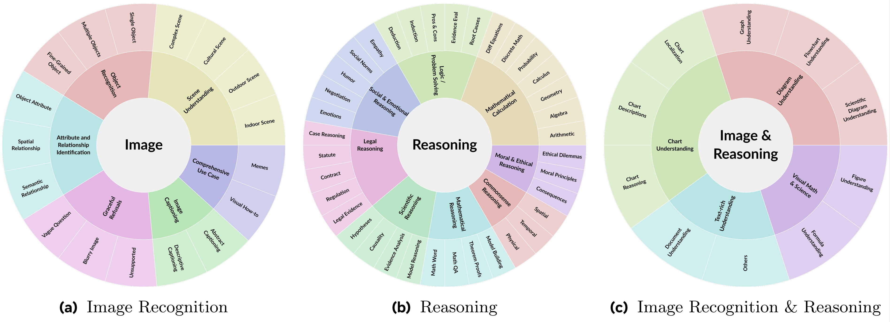
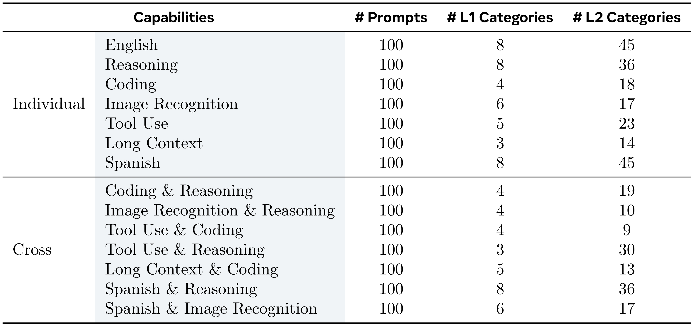
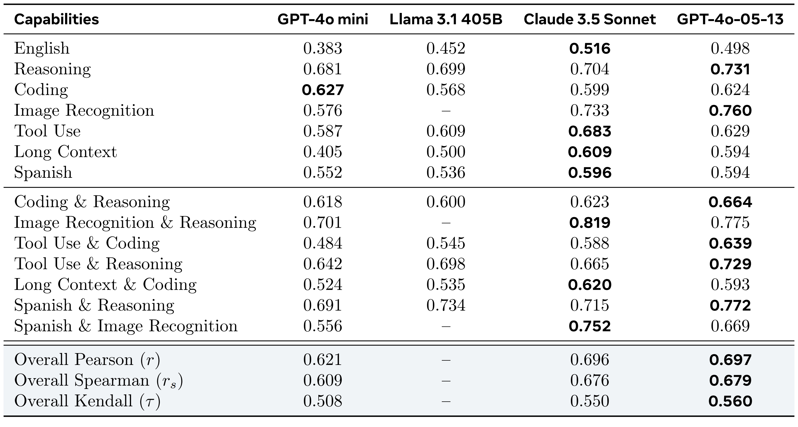
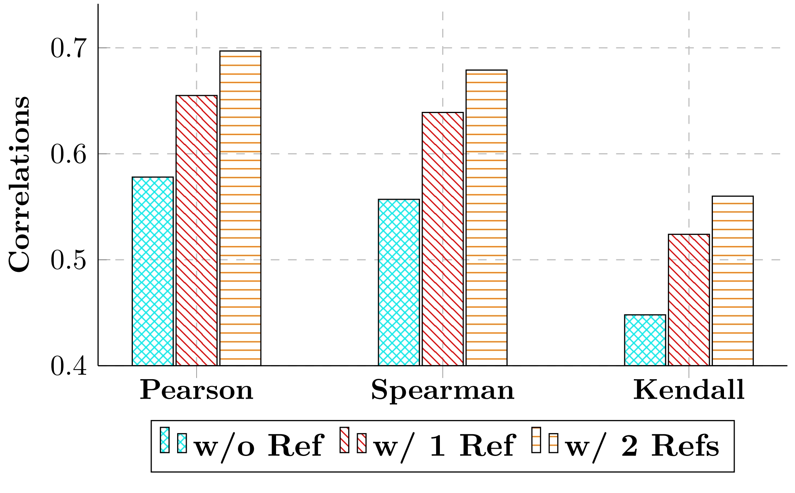
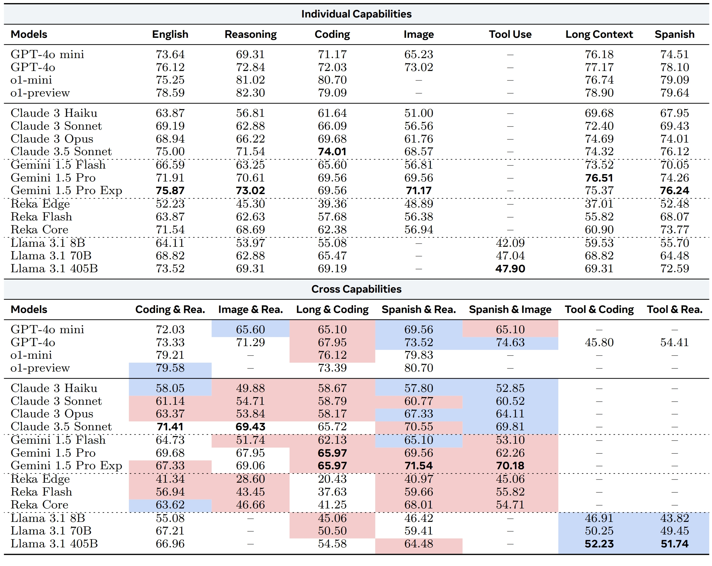
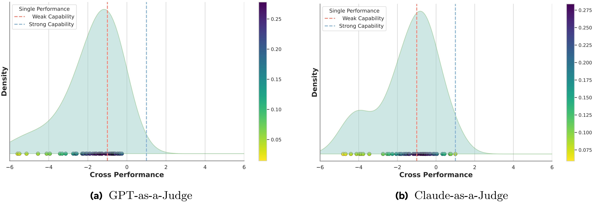
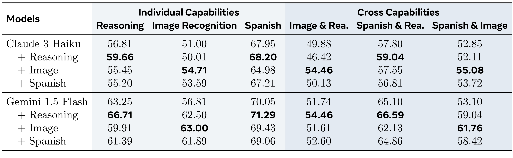

@article{zhong2024law,
title={Law of the Weakest Link: Cross Capabilities of Large Language Models},
author={Zhong, Ming and Zhang, Aston and Wang, Xuewei and Hou, Rui and Xiong, Wenhan and Zhu, Chenguang and Chen, Zhengxing and Tan, Liang and Bi, Chloe and Lewis, Mike and Popuri, Sravya and Narang, Sharan and Kambadur, Melanie and Mahajan, Dhruv and Edunov, Sergey and Han, Jiawei and van der Maaten, Laurens},
journal={arXiv preprint arXiv:2409.19951},
year={2024}
}